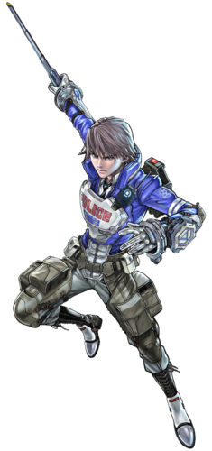

CinemaScope
Themes
Themes
Here is where you can find information on the monthly themes and past themes.
For the moment, we don't have any themes planned because of COVID-19 so all of the themes below are previous themes.
This was chosen about the time that Terminator: Dark Fate was in cinemas to fit with the original terminator's vibe. The winner of the costume contest was Gravie Boate, who dressed up as the male player character from "Astral Chain".
This was to celebrate the 1st anniversary of CinemaScope. The winner of the costume contest was May 'Bee' Nyce, who was dressed as Edward scissorhands. Technically not a slasher but I didn't judge it so I don't really know what you want me to say.
.jpg)
This was for the western appreciation week, in which we showed a bunch of western films and reminissed over a time when they were actually made. The winner of this costume contest was Mince Myeet who was dressed as some sort of cowboy clown nicknamed "clownboy".
I have never had more respect for someone than I did that night.
.jpg)
Made by NotSureIfBen